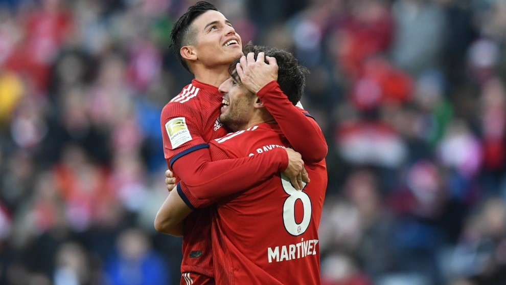

James Rodríguez al frente de la remontada del Bayern Múnich

Foto: Marca
02/03/2019
Ángel Giménez
El Bayern Munich avanza paso a paso en la Bundesliga, sin mucha prisa. Luego de la derrota del Borussia Dortmund 2 a 1 ante el Augsburgo, en el comienzo de la jornada 24 de la liga alemana, el equipo dirigido por Niko Kovac puede igualarlo en la primera posición de la tabla. Gran parte de esta remontada del equipo bávaro se debe a la titularidad del colombiano James Rodríguez, que desde que es titular se ha visto notablemente la mejora del equipo y los aportes del zurdo al plantel.
Luego de recuperarse de una lesión en la que sufrió un esguince en los ligamentos externos de su rodilla izquierda, el volante cucuteño ha vuelto de la mejor manera posible. Desde su aparición en la fecha 18, cuando el Bayern estaba a seis puntos del liderato, hoy día solo lo separan tres unidades del Dortmund, y en caso de vencer a Borussia Mönchengladbach, la punta estará compartida.
A pesar de que acumula 133 días sin festejar un gol con el Bayern, cabe aclarar que James ha dado dos asistencias, y una de ellas fue clave en el triunfo sobre el Hertha de Berlín.